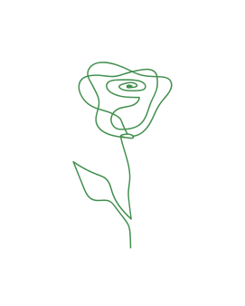
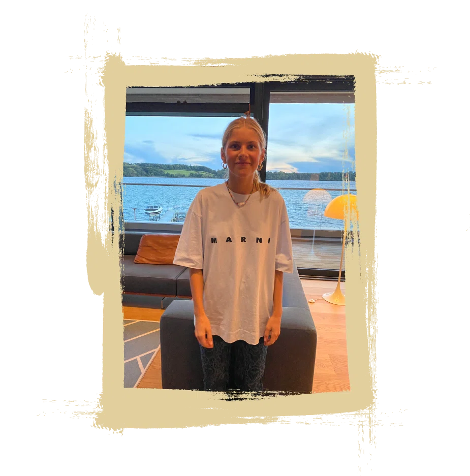
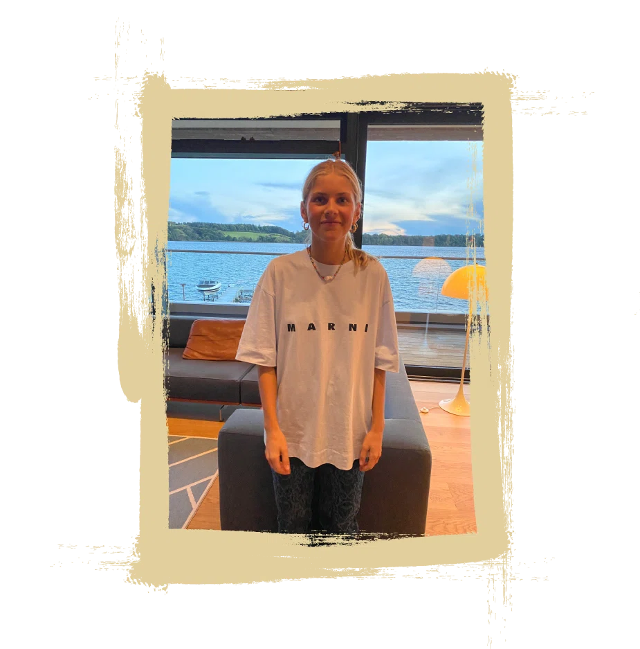
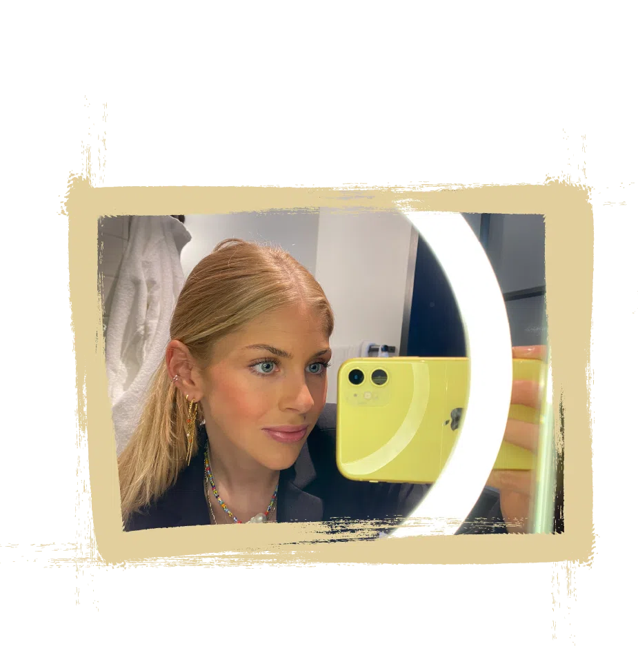
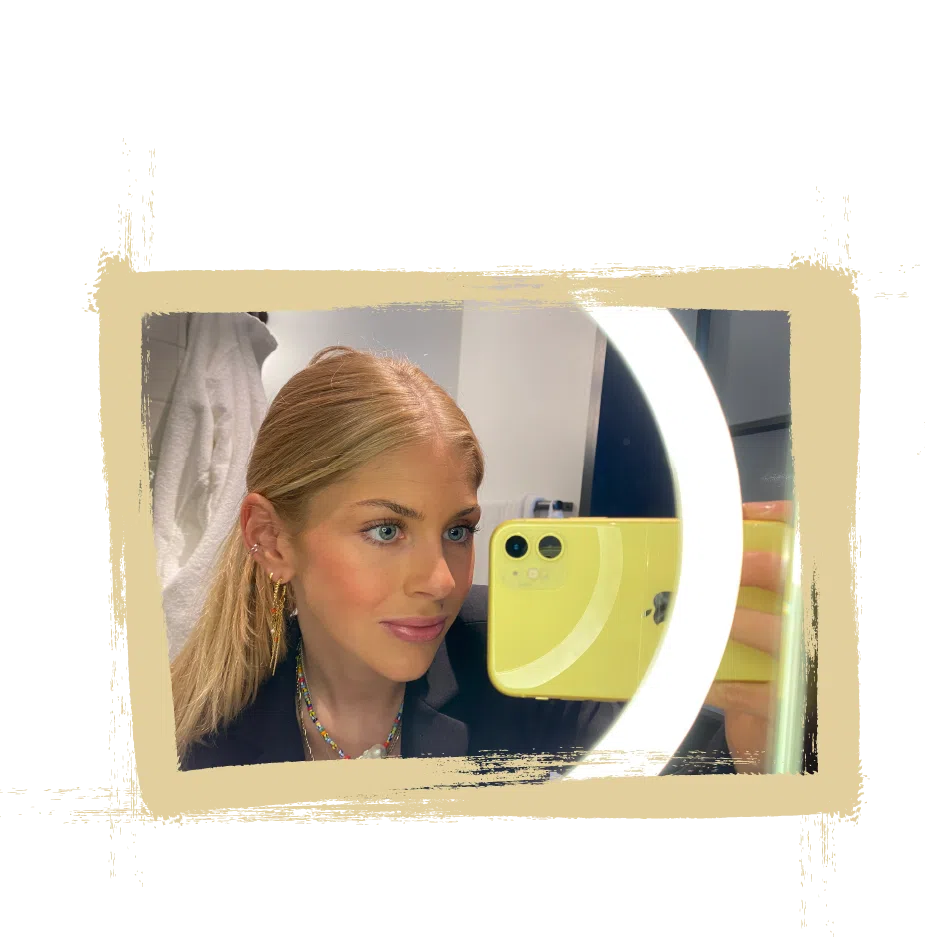

Kontakt
Vagtelvej 57, 4.th
2000, Frederiksberg
Danmark
E-mail: i.struckmann@hotmail.com
Tlf.: (+45) 28 87 89 39
Sociale medier
Om mig
Hej,
Mit navn er Ida-Marie Struckmann Danielsen. Jeg er 22 år gammel og er født og opvokset i Kolding. Jeg flyttede til København i januar måned 2022, og er nu bosat på Frederiksberg, imens jeg til dagligt læser til multimediedesigner på Københavns Erhvervsakademi.
Jeg er proaktiv, ambitiøs og har sans for detaljen. Jeg er passioneret omkring UI/UX design og Web design især inden for digital markedsføring, sociale medier og kommunikation. Jeg er modebevidst og up to date med de nyeste trends og tendenser og har altid haft en stor interesse for det visuelle udtryk og alt hvad dette måtte afspejle. Jeg har gennemført kurser inden for mode og design, herunder Innovative Fashion Management, Photoshop og Illustrator, som for alvor har kickstartet min lyst til at læse til multimediedesigner.
Jeg er en social og aktiv pige, som trives bedst med mange bolde i luften. Når jeg ikke læser på KEA, kan jeg godt lide at tilbringe tid blandt venner og familie, udfolde mig selv på en kreativ måde eller at opleve nye ting. Jeg har blandt andet rejst som backpacker i New Zealand, Indonesien og Afrika, hvor jeg har oplevet vilde kulturelle og sociale forskelle. Jeg har en positiv og energisk personlighed, som trives bedst i sociale sammenhæng, hvor jeg har mulighed for at sparre med andre.
Se billedegalleri.


 

 
